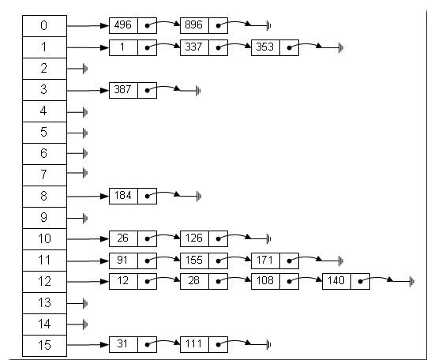
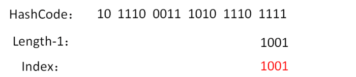

<!DOCTYPE html>
<html lang="zh-CN">
<head><meta name="generator" content="Hexo 3.8.0">

    <!--[if lt IE 9]>
        <style>body {display: none; background: none !important} </style>
        <meta http-equiv="Refresh" Content="0; url=//outdatedbrowser.com/" />
    <![endif]-->

<meta charset="utf-8">
<meta http-equiv="X-UA-Compatible" content="IE=edge, chrome=1">
<meta name="viewport" content="width=device-width, initial-scale=1, maximum-scale=1, user-scalable=no">
<meta name="format-detection" content="telephone=no">
<meta name="author" content="康兴华">


<meta name="description" content="首先介绍一下Hash表: 哈希表定义Hash,一般翻译做”散列”,也有直译为”哈希”的,就把任意长的输入(又叫做预映射,pre-image),通过散列算法,变换成固定长度输出,该输出就是散列值. 这种转换是一种压缩映射,也就是, 散列值的空间通常远小于输入的空间,不同的输入可能会散列成相同的输出,而不可能从散列值来唯一的确定输入值.简单的说就是一种将任意长度的消息压缩到某一固定长度的消息摘要的函数">
<meta name="keywords" content="笔记">
<meta property="og:type" content="article">
<meta property="og:title" content="深入理解HashMap">
<meta property="og:url" content="http://kxh.ink/2018/09/19/HashMap-System-Learning/index.html">
<meta property="og:site_name" content="康兴华">
<meta property="og:description" content="首先介绍一下Hash表: 哈希表定义Hash,一般翻译做”散列”,也有直译为”哈希”的,就把任意长的输入(又叫做预映射,pre-image),通过散列算法,变换成固定长度输出,该输出就是散列值. 这种转换是一种压缩映射,也就是, 散列值的空间通常远小于输入的空间,不同的输入可能会散列成相同的输出,而不可能从散列值来唯一的确定输入值.简单的说就是一种将任意长度的消息压缩到某一固定长度的消息摘要的函数">
<meta property="og:locale" content="zh-CN">
<meta property="og:image" content="http://kxh.ink/2018/09/19/HashMap-System-Learning/687474703a2f2f696d672e6d792e6373.png">
<meta property="og:image" content="http://kxh.ink/2018/09/19/HashMap-System-Learning/7347393-a9962c5fb92eb958.png">
<meta property="og:image" content="http://kxh.ink/2018/09/19/HashMap-System-Learning/7347393-5a4b6c0a2fc4eef0.png">
<meta property="og:image" content="http://kxh.ink/2018/09/19/HashMap-System-Learning/7347393-e37f9d5a943823b1.png">
<meta property="og:updated_time" content="2018-10-22T06:34:56.116Z">
<meta name="twitter:card" content="summary">
<meta name="twitter:title" content="深入理解HashMap">
<meta name="twitter:description" content="首先介绍一下Hash表: 哈希表定义Hash,一般翻译做”散列”,也有直译为”哈希”的,就把任意长的输入(又叫做预映射,pre-image),通过散列算法,变换成固定长度输出,该输出就是散列值. 这种转换是一种压缩映射,也就是, 散列值的空间通常远小于输入的空间,不同的输入可能会散列成相同的输出,而不可能从散列值来唯一的确定输入值.简单的说就是一种将任意长度的消息压缩到某一固定长度的消息摘要的函数">
<meta name="twitter:image" content="http://kxh.ink/2018/09/19/HashMap-System-Learning/687474703a2f2f696d672e6d792e6373.png">

<link rel="apple-touch-icon" href="/apple-touch-icon.png">


    <link rel="alternate" href="/atom.xml" title="康兴华" type="application/atom+xml">


    <link rel="shortcut icon" href="/favicon.png">


    <link href="//cdn.bootcss.com/animate.css/3.5.1/animate.min.css" rel="stylesheet">


    <link href="//cdn.bootcss.com/fancybox/2.1.5/jquery.fancybox.min.css" rel="stylesheet">


    <script src="//cdn.bootcss.com/pace/1.0.2/pace.min.js"></script>
    <link href="//cdn.bootcss.com/pace/1.0.2/themes/blue/pace-theme-minimal.css" rel="stylesheet">


<link rel="stylesheet" href="/css/style.css">


<link href="//cdn.bootcss.com/font-awesome/4.6.3/css/font-awesome.min.css" rel="stylesheet">


<title>深入理解HashMap | 康兴华</title>

<script src="//cdn.bootcss.com/jquery/2.2.4/jquery.min.js"></script>
<script src="//cdn.bootcss.com/clipboard.js/1.5.10/clipboard.min.js"></script>

<script>
    var yiliaConfig = {
        fancybox: true,
        animate: true,
        isHome: false,
        isPost: true,
        isArchive: false,
        isTag: false,
        isCategory: false,
        fancybox_js: "//cdn.bootcss.com/fancybox/2.1.5/jquery.fancybox.min.js",
        scrollreveal: "//cdn.bootcss.com/scrollReveal.js/3.1.4/scrollreveal.min.js",
        search: true
    }
</script>


    <script> yiliaConfig.jquery_ui = [false]; </script>


    <script> yiliaConfig.rootUrl = "\/";</script>


</head></html>
<body>
  <div id="container">
    <div class="left-col">
    <div class="overlay"></div>
<div class="intrude-less">
    <header id="header" class="inner">
        <a href="/" class="profilepic">
            
        </a>
        <hgroup>
          <h1 class="header-author"><a href="/">康兴华</a></h1>
        </hgroup>

        

        
            <form id="search-form">
            <input type="text" id="local-search-input" name="q" placeholder="search..." class="search form-control" autocomplete="off" autocorrect="off" searchonload="true">
            <i class="fa fa-times" onclick="resetSearch()"></i>
            </form>
            <div id="local-search-result"></div>
            <p class="no-result">No results found <i class="fa fa-spinner fa-pulse"></i></p>
        


        
            <div id="switch-btn" class="switch-btn">
                <div class="icon">
                    <div class="icon-ctn">
                        <div class="icon-wrap icon-house" data-idx="0">
                            <div class="birdhouse"></div>
                            <div class="birdhouse_holes"></div>
                        </div>
                        <div class="icon-wrap icon-ribbon hide" data-idx="1">
                            <div class="ribbon"></div>
                        </div>
                        
                        <div class="icon-wrap icon-link hide" data-idx="2">
                            <div class="loopback_l"></div>
                            <div class="loopback_r"></div>
                        </div>
                        
                        
                        <div class="icon-wrap icon-me hide" data-idx="3">
                            <div class="user"></div>
                            <div class="shoulder"></div>
                        </div>
                        
                    </div>
                    
                </div>
                <div class="tips-box hide">
                    <div class="tips-arrow"></div>
                    <ul class="tips-inner">
                        <li>菜单</li>
                        <li>标签</li>
                        
                        <li>友情链接</li>
                        
                        
                        <li>关于我</li>
                        
                    </ul>
                </div>
            </div>
        

        <div id="switch-area" class="switch-area">
            <div class="switch-wrap">
                <section class="switch-part switch-part1">
                    <nav class="header-menu">
                        <ul>
                        
                            <li><a href="/">主页</a></li>
                        
                            <li><a href="/archives/">所有文章</a></li>
                        
                            <li><a href="/tags/">标签云</a></li>
                        
                            <li><a href="/about/">关于我</a></li>
                        
                        </ul>
                    </nav>
                    <nav class="header-nav">
                        <ul class="social">
                            
                                <a class="fa Email" href="mailto:kangxinghua@gmail.com" title="Email"></a>
                            
                                <a class="fa GitHub" href="https://github.com/kangxinghua" title="GitHub"></a>
                            
                                <a class="fa RSS" href="/atom.xml" title="RSS"></a>
                            
                        </ul>
                    </nav>
                </section>
                
                
                <section class="switch-part switch-part2">
                    <div class="widget tagcloud" id="js-tagcloud">
                        <ul class="tag-list"><li class="tag-list-item"><a class="tag-list-link" href="/tags/Java-并发编程实战/">Java 并发编程实战</a></li><li class="tag-list-item"><a class="tag-list-link" href="/tags/笔记/">笔记</a></li></ul>
                    </div>
                </section>
                
                
                
                <section class="switch-part switch-part3">
                    <div id="js-friends">
                    
                      <a class="main-nav-link switch-friends-link" href="https://hexo.io">Hexo</a>
                    
                      <a class="main-nav-link switch-friends-link" href="https://pages.github.com/">GitHub</a>
                    
                      <a class="main-nav-link switch-friends-link" href="http://moxfive.xyz/">MOxFIVE</a>
                    
                    </div>
                </section>
                

                
                
                <section class="switch-part switch-part4">
                
                    <div id="js-aboutme">专注于前端</div>
                </section>
                
            </div>
        </div>
    </header>                
</div>
    </div>
    <div class="mid-col">
      <nav id="mobile-nav">
      <div class="overlay">
          <div class="slider-trigger"></div>
          <h1 class="header-author js-mobile-header hide"><a href="/" title="回到主页">康兴华</a></h1>
      </div>
    <div class="intrude-less">
        <header id="header" class="inner">
            <a href="/" class="profilepic">
                
            </a>
            <hgroup>
              <h1 class="header-author"><a href="/" title="回到主页">康兴华</a></h1>
            </hgroup>
            
            <nav class="header-menu">
                <ul>
                
                    <li><a href="/">主页</a></li>
                
                    <li><a href="/archives/">所有文章</a></li>
                
                    <li><a href="/tags/">标签云</a></li>
                
                    <li><a href="/about/">关于我</a></li>
                
                <div class="clearfix"></div>
                </ul>
            </nav>
            <nav class="header-nav">
                        <ul class="social">
                            
                                <a class="fa Email" target="_blank" href="mailto:kangxinghua@gmail.com" title="Email"></a>
                            
                                <a class="fa GitHub" target="_blank" href="https://github.com/kangxinghua" title="GitHub"></a>
                            
                                <a class="fa RSS" target="_blank" href="/atom.xml" title="RSS"></a>
                            
                        </ul>
            </nav>
        </header>                
    </div>
    <link class="menu-list" tags="标签" friends="友情链接" about="关于我">
</nav>
      <div class="body-wrap"><article id="post-HashMap-System-Learning" class="article article-type-post" itemscope="" itemprop="blogPost">
  
    <div class="article-meta">
      <a href="/2018/09/19/HashMap-System-Learning/" class="article-date">
      <time datetime="2018-09-19T13:46:03.000Z" itemprop="datePublished">2018-09-19</time>
</a>


    </div>
  
  <div class="article-inner">
    
      <input type="hidden" class="isFancy">
    
    
      <header class="article-header">
        
  
    <h1 class="article-title" itemprop="name">
      深入理解HashMap
    </h1>
  

      </header>
      
      <div class="article-info article-info-post">
        

        
    <div class="article-tag tagcloud">
        <ul class="article-tag-list"><li class="article-tag-list-item"><a class="article-tag-list-link" href="/tags/笔记/">笔记</a></li></ul>
    </div>

        <div class="clearfix"></div>
      </div>
      
    
    <div class="article-entry" itemprop="articleBody">
      
          
        <p>首先介绍一下Hash表:</p>
<h1 id="哈希表定义"><a href="#哈希表定义" class="headerlink" title="哈希表定义"></a>哈希表定义</h1><p>Hash,一般翻译做”散列”,也有直译为”哈希”的,就把任意长的输入(又叫做预映射,pre-image),通过散列算法,变换成固定长度输出,该输出就是散列值.</p>
<p><strong>这种转换是一种压缩映射,</strong>也就是, 散列值的空间通常远小于输入的空间,不同的输入可能会散列成相同的输出,而不可能从散列值来唯一的确定输入值.<strong>简单的说就是一种将任意长度的消息压缩到某一固定长度的消息摘要的函数.</strong></p>
<a id="more"></a>
<p>Hash主要用于信息安全领域中加密算法,它把一些不同长度的信息转化成杂乱的128位的编码,这些编码值叫做Hash值.也可以说.Hash就是找到一种数据内容和数据地址之间的映射关系例如字符串hello的哈希算法</p>
<figure class="highlight java"><table><tr><td class="gutter"><pre><span class="line">1</span><br></pre></td><td class="code"><pre><span class="line"><span class="keyword">char</span> value = <span class="string">"hello"</span>; <span class="keyword">int</span> key = (((((((<span class="number">27</span> (<span class="keyword">int</span>)<span class="string">'h'</span>+<span class="number">27</span>) (<span class="keyword">int</span>)<span class="string">'e'</span>) + <span class="number">27</span>) 　 (<span class="keyword">int</span>)<span class="string">'l'</span>) + <span class="number">27</span>)  (<span class="keyword">int</span>)<span class="string">'l'</span> +<span class="number">27</span>)  <span class="number">27</span> ) + (<span class="keyword">int</span>)<span class="string">'o'</span> ;</span><br></pre></td></tr></table></figure>
<h2 id="接着说一下HashMap"><a href="#接着说一下HashMap" class="headerlink" title="接着说一下HashMap"></a>接着说一下HashMap</h2><p>我想大家对于HashMap并不陌生,程序员基本上使用HashMap.估计很多公司面试的时候都会聊起HashMap,既然HashMap这么重要,我们就一起谈谈这个HashMap.</p>
<ul>
<li>HashMap概述及实现原理</li>
<li>HashMap的数据结构</li>
<li>HashMap的几个关键属性</li>
<li>HashMap的存取实现</li>
<li>fail-fast策略</li>
<li>Hash冲突以及如何解决Hash冲突</li>
<li>HashMap和HashTable区别</li>
</ul>
<h1 id="HashMap概述"><a href="#HashMap概述" class="headerlink" title="HashMap概述"></a>HashMap概述</h1><blockquote>
<p>定义:HashMap实现了Map接口,继承自AbstractMap.其中Map接口定义了键映射到值得规则,而Abstract类已经实现了Map,这里标注Map 这样应该是更加清晰<br><figure class="highlight java"><table><tr><td class="gutter"><pre><span class="line">1</span><br><span class="line">2</span><br><span class="line">3</span><br><span class="line">4</span><br><span class="line">5</span><br></pre></td><td class="code"><pre><span class="line"><span class="keyword">public</span> <span class="class"><span class="keyword">class</span> <span class="title">HashMap</span>&lt;<span class="title">K</span>,<span class="title">V</span>&gt;</span></span><br><span class="line"><span class="class">    <span class="keyword">extends</span> <span class="title">AbstractMap</span>&lt;<span class="title">K</span>,<span class="title">V</span>&gt;</span></span><br><span class="line"><span class="class">    <span class="keyword">implements</span> <span class="title">Map</span>&lt;<span class="title">K</span>,<span class="title">V</span>&gt;, <span class="title">Cloneable</span>, <span class="title">Serializable</span></span>&#123;</span><br><span class="line"></span><br><span class="line">&#125;</span><br></pre></td></tr></table></figure></p>
</blockquote>
<h2 id="特点"><a href="#特点" class="headerlink" title="特点"></a>特点</h2><p>数组特点:</p>
<blockquote>
<p>寻址容易,插入和删除困难.</p>
</blockquote>
<p>链表得特点:</p>
<blockquote>
<p>寻址困难,插入和删除容易.</p>
</blockquote>
<p><strong>实现原理</strong> 简单得说,HashMap得key做Hash算法,并将Hash值映射到内存地址,直接取得key对应的value.</p>
<p>HashMap的高性能需要保证以下几点:</p>
<ul>
<li>将key Hash的算法必须是高效的</li>
<li>Hash值映射到内存地址(数组索引)的算法是快速的</li>
<li>根据内存地址(数组索引)可以直接取得对应的值</li>
</ul>
<h2 id="HashMap的数据结构"><a href="#HashMap的数据结构" class="headerlink" title="HashMap的数据结构"></a>HashMap的数据结构</h2><p>HashMap的数据结构:在Java语言中,最基本的数据结构就两种,一种是数组,另一种是模拟指针(引用),所有的数据结构都可以使用这两种数据结构构造,HashMap也是可以这样的.HashMap其实就是链表散列,是数组和链表的结合体.图下:<br></p>
<p>观察HashMap的结构图,我们了解到HashMap底层是一个数组,数组中每一项是一个链表.HashMap提供了三个构造函数:</p>
<ul>
<li>HashMap()是一个默认的构造器,初始容量16,负载因子为0.75.</li>
<li>HashMap(int initialCapacity)是一个指定初始容量为initialCapacity,负载因子为0.75的空的HashMap.</li>
<li>HashMap(int initialCapacity,float loadFactor)是一个指定初始容量为initialCapacity,负载因子为loadFactor的空的HashMap.</li>
</ul>
<p>我们查看一下HashMap的初始化源码:</p>
<figure class="highlight java"><table><tr><td class="gutter"><pre><span class="line">1</span><br><span class="line">2</span><br><span class="line">3</span><br><span class="line">4</span><br><span class="line">5</span><br><span class="line">6</span><br><span class="line">7</span><br><span class="line">8</span><br><span class="line">9</span><br><span class="line">10</span><br><span class="line">11</span><br><span class="line">12</span><br><span class="line">13</span><br><span class="line">14</span><br><span class="line">15</span><br><span class="line">16</span><br><span class="line">17</span><br><span class="line">18</span><br><span class="line">19</span><br></pre></td><td class="code"><pre><span class="line"><span class="function"><span class="keyword">public</span> <span class="title">HashMap</span><span class="params">()</span> </span>&#123;</span><br><span class="line">    <span class="keyword">this</span>(DEFAULT_INITIAL_CAPACITY,DEFAULT_LOAD_FACTOR);</span><br><span class="line">&#125;</span><br><span class="line">  </span><br><span class="line"><span class="function"><span class="keyword">public</span> <span class="title">HashMap</span><span class="params">(<span class="keyword">int</span> initialCapacity)</span> </span>&#123;</span><br><span class="line">    <span class="keyword">this</span>(initialCapacity, DEFAULT_LOAD_FACTOR);</span><br><span class="line">&#125;</span><br><span class="line"></span><br><span class="line"><span class="function"><span class="keyword">public</span> <span class="title">HashMap</span><span class="params">(<span class="keyword">int</span> initialCapacity, <span class="keyword">float</span> loadFactor)</span> </span>&#123;</span><br><span class="line">    <span class="keyword">if</span> (initialCapacity &lt; <span class="number">0</span>)</span><br><span class="line">        <span class="keyword">throw</span> <span class="keyword">new</span> IllegalArgumentException(<span class="string">"Illegal initial capacity: "</span> +initialCapacity);</span><br><span class="line">    <span class="keyword">if</span> (initialCapacity &gt; MAXIMUM_CAPACITY)</span><br><span class="line">        initialCapacity = MAXIMUM_CAPACITY;</span><br><span class="line">    <span class="keyword">if</span> (loadFactor &lt;= <span class="number">0</span> || Float.isNaN(loadFactor))</span><br><span class="line">        <span class="keyword">throw</span> <span class="keyword">new</span> IllegalArgumentException(<span class="string">"Illegal load factor: "</span> +loadFactor);</span><br><span class="line">        <span class="keyword">this</span>.loadFactor = loadFactor;</span><br><span class="line">        threshold = initialCapacity;</span><br><span class="line">        init();</span><br><span class="line">&#125;</span><br></pre></td></tr></table></figure>
<h2 id="HashMap的几个关键属性"><a href="#HashMap的几个关键属性" class="headerlink" title="HashMap的几个关键属性"></a>HashMap的几个关键属性</h2><ol>
<li>initialCapacity<ul>
<li>initialCapacity为HashMap的最大容量,也就是底层数组的长度.</li>
</ul>
</li>
<li>加载因子loadFactor<ul>
<li>loadFactor为加载因子,即散列表的实际元素数目(n)/散列表的容量(m).另外,laodFactor越大,存储长度越小,查询时间越长.loadFactor越小,存储长度越大,查询时间短.HashMap默认的是0.75负载因子衡量的是一个散列表的空间的使用程度,负载因子越大表示散列表的装填程度越高,反之愈小.对于使用链表法的散列表来说,查找一个元素的平均时间是O(1+a).</li>
</ul>
</li>
</ol>
<h2 id="HashMap的存取实现"><a href="#HashMap的存取实现" class="headerlink" title="HashMap的存取实现"></a>HashMap的存取实现</h2><ol>
<li><p>存储<br> 我们先看看HashMap的put()方法的源码:</p>
 <figure class="highlight java"><table><tr><td class="gutter"><pre><span class="line">1</span><br><span class="line">2</span><br><span class="line">3</span><br><span class="line">4</span><br><span class="line">5</span><br><span class="line">6</span><br><span class="line">7</span><br><span class="line">8</span><br><span class="line">9</span><br><span class="line">10</span><br><span class="line">11</span><br><span class="line">12</span><br><span class="line">13</span><br><span class="line">14</span><br><span class="line">15</span><br><span class="line">16</span><br><span class="line">17</span><br><span class="line">18</span><br><span class="line">19</span><br><span class="line">20</span><br><span class="line">21</span><br><span class="line">22</span><br><span class="line">23</span><br><span class="line">24</span><br><span class="line">25</span><br><span class="line">26</span><br><span class="line">27</span><br><span class="line">28</span><br><span class="line">29</span><br><span class="line">30</span><br></pre></td><td class="code"><pre><span class="line"><span class="function"><span class="keyword">public</span> V <span class="title">put</span><span class="params">(K key, V value)</span> </span>&#123;</span><br><span class="line">    <span class="comment">// 如果table为null,inflate 该table</span></span><br><span class="line">    <span class="keyword">if</span> (table == EMPTY_TABLE) &#123;</span><br><span class="line">        inflateTable(threshold);</span><br><span class="line">    &#125;</span><br><span class="line">    <span class="comment">// 当key为null,调用putForNullKey方法,保存null与table第一个位    置中,这是HashMap允许为null的原因</span></span><br><span class="line">    <span class="keyword">if</span> (key == <span class="keyword">null</span>)</span><br><span class="line">        <span class="keyword">return</span> putForNullKey(value);</span><br><span class="line">    <span class="comment">// 根据key的hashcode进行计算hash值.</span></span><br><span class="line">    <span class="keyword">int</span> hash = hash(key);</span><br><span class="line">    <span class="comment">// 根据指定hash值在找到对应的table中的索引. </span></span><br><span class="line">    <span class="keyword">int</span> i = indexFor(hash, table.length);</span><br><span class="line">    <span class="comment">// 若 i 索引处的 Entry 不为 null,通过循环不断遍历 e 元素的下    一个元素.</span></span><br><span class="line">    <span class="keyword">for</span> (Entry&lt;K,V&gt; e = table[i]; e != <span class="keyword">null</span>; e = e.next) &#123;</span><br><span class="line">        Object k;</span><br><span class="line">        <span class="comment">// 判断该条链上是否有hash值相同的(key相同)</span></span><br><span class="line">        <span class="comment">// 若存在相同,则直接覆盖value,返回旧value</span></span><br><span class="line">        <span class="keyword">if</span> (e.hash == hash &amp;&amp; ((k = e.key) == key ||    key.equals(k))) &#123;</span><br><span class="line">            V oldValue = e.value;</span><br><span class="line">            e.value = value;</span><br><span class="line">            e.recordAccess(<span class="keyword">this</span>);</span><br><span class="line">            <span class="keyword">return</span> oldValue;</span><br><span class="line">        &#125;</span><br><span class="line">    &#125;</span><br><span class="line">    <span class="comment">// 如果i索引处的Entry为null,表明此处还没有Entry.</span></span><br><span class="line">    modCount++;</span><br><span class="line">    <span class="comment">// 将key、value添加到i索引处.</span></span><br><span class="line">    addEntry(hash, key, value, i);</span><br><span class="line">    <span class="keyword">return</span> <span class="keyword">null</span>;</span><br><span class="line">&#125;</span><br></pre></td></tr></table></figure>
<p> 分析了上面put()方法源代码中可以看出:</p>
<ul>
<li>当我们向HashMap中put元素的时候,先根据key的HashCode的值计算    Hash值,根据Hash值得到这个元素在数组中的位置(即下标).</li>
<li>如果数组该位置上已经存放有其他元素了,那么在这个位置上的元素将 以链表的形式存放,新加入的放在链头,最先加入的放在链尾.</li>
<li><p>如果数组该位置上没有元素,就直接将该元素放到此数组中的该位置上 .<br>addEntry(hash, key, value, i)方法根据计算出的hash值,将key-value 对放在数组table的i索引处.addEntry 是 HashMap 提供的一个包访问权限    的方法,代码如下:</p>
<figure class="highlight java"><table><tr><td class="gutter"><pre><span class="line">1</span><br><span class="line">2</span><br><span class="line">3</span><br><span class="line">4</span><br><span class="line">5</span><br><span class="line">6</span><br><span class="line">7</span><br><span class="line">8</span><br><span class="line">9</span><br><span class="line">10</span><br><span class="line">11</span><br><span class="line">12</span><br><span class="line">13</span><br><span class="line">14</span><br><span class="line">15</span><br><span class="line">16</span><br><span class="line">17</span><br><span class="line">18</span><br><span class="line">19</span><br><span class="line">20</span><br><span class="line">21</span><br><span class="line">22</span><br><span class="line">23</span><br></pre></td><td class="code"><pre><span class="line"><span class="function"><span class="keyword">void</span> <span class="title">addEntry</span><span class="params">(<span class="keyword">int</span> hash, K key, V value, <span class="keyword">int</span> bucketIndex)</span> </span>&#123;</span><br><span class="line"> <span class="comment">// 如果 Map 中的 key-value 对的数量超过了极限</span></span><br><span class="line">    <span class="keyword">if</span> ((size &gt;= threshold) &amp;&amp; (<span class="keyword">null</span>!=table[bucketIndex]))&#123;</span><br><span class="line">        <span class="comment">// 把 table 对象的长度扩充到原来的2倍. </span></span><br><span class="line">        resize(<span class="number">2</span> * table.length);</span><br><span class="line">        hash = (<span class="keyword">null</span> != key) ? hash(key) : <span class="number">0</span>;</span><br><span class="line">        bucketIndex = indexFor(hash, table.length);</span><br><span class="line">    &#125;</span><br><span class="line">    createEntry(hash, key, value, bucketIndex);</span><br><span class="line">&#125;</span><br><span class="line"></span><br><span class="line"><span class="function"><span class="keyword">void</span> <span class="title">createEntry</span><span class="params">(<span class="keyword">int</span> hash, K key, V value, <span class="keyword">int</span> bucketIndex)</span> </span>&#123;</span><br><span class="line">    <span class="comment">// 根据bucketIndex 获取对应的 Entry  </span></span><br><span class="line">    Entry&lt;K,V&gt; e = table[bucketIndex];</span><br><span class="line">    <span class="comment">// 将新创建的 Entry 放入 bucketIndex 索引处,并让新的 Entry  指向原来的 Entry </span></span><br><span class="line">    table[bucketIndex] = <span class="keyword">new</span> Entry&lt;&gt;(hash, key, value, e);</span><br><span class="line">    size++;</span><br><span class="line">&#125;</span><br><span class="line"></span><br><span class="line"><span class="function"><span class="keyword">static</span> <span class="keyword">int</span> <span class="title">hash</span><span class="params">(<span class="keyword">int</span> h)</span> </span>&#123;</span><br><span class="line">    h ^= (h &gt;&gt;&gt; <span class="number">20</span>) ^ (h &gt;&gt;&gt; <span class="number">12</span>);</span><br><span class="line">    <span class="keyword">return</span> h ^ (h &gt;&gt;&gt; <span class="number">7</span>) ^ (h &gt;&gt;&gt; <span class="number">4</span>);</span><br><span class="line">&#125;</span><br></pre></td></tr></table></figure>
<p>Hash方法,该方法为一个纯粹的数学计算,就是计算h的Hash值.我们知道对于HashMap的table而言,数据分布需要均匀(最好每项都只有一个元素,只有就可以直接找到了),不能太紧也不能太松,太紧导致查询速度慢,太松则浪费空间.计算Hash值后,怎么才能保证table元素分布均匀呢?我们会想到取模,但是由于取模的消耗大,HashMap是这样处理的:<br>调用indexFor方法</p>
<figure class="highlight java"><table><tr><td class="gutter"><pre><span class="line">1</span><br><span class="line">2</span><br><span class="line">3</span><br></pre></td><td class="code"><pre><span class="line"><span class="function"><span class="keyword">static</span> <span class="keyword">int</span> <span class="title">indexFor</span><span class="params">(<span class="keyword">int</span> h, <span class="keyword">int</span> length)</span> </span>&#123;</span><br><span class="line">    <span class="keyword">return</span> h &amp; (length-<span class="number">1</span>);</span><br><span class="line">&#125;</span><br></pre></td></tr></table></figure>
<p>HashMap的底层数组总是2的n次方,在构造函数中存在:capacity &lt;&lt;= 1;这样做总是能够保证HashMap的底层数组的长度为2的n次方.当length为2的n次方时候,h&amp;(lenth-1)就相当于对length取模,而且速度比直接取模快的多,这是HashMap在速度上的一种优化.至于为什么是2的n次方下面解释.我们回到indexFor方法,该方法仅有一条语句:h&amp;(length-1),这句话除了上面的取模运算外还有一个非常重要的责任:均匀分布table数据和充分利用空间.</p>
<p>接下来我们以Key值为“apple”的例子来演示这个过程:</p>
<blockquote>
<p>计算“apple”的hashcode,结果为十进制的3029737,二进制的101110001110101110 1001<br>HashMap默认初始长度是16,计算HashMap.Length-1的结果为十进制的15,二进制的1111<br>把以上两个结果做 与运算,101110001110101110 1001 &amp; 1111 = 1001,十进制是9,所以 index=9</p>
</blockquote>
<p>可以看出来,hash算法得到的index值完全取决与Key的HashCode的最后几位.这样做不但效果上等同于取模运算,而且大大提高了效率.</p>
<p>那么回到最初的问题,初始长度为什么是16或者2的次幂?如果不是会怎么样?</p>
<p>我们假设HaspMap的初始长度为10,重复前面的运算步骤:<br></p>
<p>单独看这个结果,表面上并没有问题.我们再来尝试一个新的HashCode 101110001110101110 1011:<br></p>
<p>然后我们再换一个HashCode 101110001110101110 1111 试试:<br></p>
<p>这样我们可以看到,虽然HashCode的倒数第二第三位从0变成了1,但是运算的结果都是1001.也就是说,当HashMap长度为10的时候,有些index结果的出现几率会更大,而有些index结果永远不会出现（比如0111）  </p>
<p>所以这样显然不符合Hash算法均匀分布的原则.</p>
<p>而长度是16或者其他2的次幂,Length - 1的值的所有二进制位全为1（如15的二进制是1111,31的二进制为11111）,这种情况下,index的结果就等同于HashCode后几位的值.只要输入的HashCode本身分布均匀,Hash算法的结果就是均匀的.这也是HashMap设计的玄妙之处.</p>
</li>
</ul>
</li>
<li><p>获取</p>
 <figure class="highlight java"><table><tr><td class="gutter"><pre><span class="line">1</span><br><span class="line">2</span><br><span class="line">3</span><br><span class="line">4</span><br><span class="line">5</span><br><span class="line">6</span><br><span class="line">7</span><br><span class="line">8</span><br><span class="line">9</span><br><span class="line">10</span><br><span class="line">11</span><br><span class="line">12</span><br><span class="line">13</span><br><span class="line">14</span><br><span class="line">15</span><br><span class="line">16</span><br><span class="line">17</span><br><span class="line">18</span><br></pre></td><td class="code"><pre><span class="line"><span class="function"><span class="keyword">public</span> V <span class="title">get</span><span class="params">(Object key)</span> </span>&#123;  </span><br><span class="line">    <span class="comment">// 如果key = null时,返回null对应的value值.</span></span><br><span class="line">    <span class="keyword">if</span> (key == <span class="keyword">null</span>)  </span><br><span class="line">        <span class="keyword">return</span> getForNullKey(); </span><br><span class="line">    <span class="comment">// 根据key的hashcode值做hash获取对应的值</span></span><br><span class="line">    <span class="keyword">int</span> hash = hash(key.hashCode()); </span><br><span class="line">    <span class="comment">// 根据指定hash值在找到对应的table中的索引,并根据索引获取该处  的Entry,通过循环不断遍历 e 元素的下一个元素.</span></span><br><span class="line">    <span class="keyword">for</span> (Entry&lt;K,V&gt; e = table[indexFor(hash, table.length)];  </span><br><span class="line">        e != <span class="keyword">null</span>;  </span><br><span class="line">        e = e.next) &#123;  </span><br><span class="line">        Object k;  </span><br><span class="line">        <span class="comment">// 判断e元素的hash与hash是否相等,如果相等并且e元素与key    相等则返回e的原则的value</span></span><br><span class="line">        <span class="keyword">if</span> (e.hash == hash &amp;&amp; ((k = e.key) == key ||    key.equals(k)))  </span><br><span class="line">            <span class="keyword">return</span> e.value;  </span><br><span class="line">    &#125;  </span><br><span class="line">    <span class="comment">// 如果指定hash值在找到对应的table中的索引,并根据索引获取该处  的Entry的为null,则返回null.</span></span><br><span class="line">    <span class="keyword">return</span> <span class="keyword">null</span>;  </span><br><span class="line">&#125;</span><br></pre></td></tr></table></figure>
<p> 从get()的源代码中可以看出:从HashMap中get元素时,首先计算key的hashCode,通过IndexFor(hash,table.length)找到数组中对应位置的某一元素,然后通过key的equals方法在对应位置的链表中找到需要的元素.</p>
<blockquote>
<p>总结：HashMap 在底层将 key-value 当成一个整体进行处理,这个整体就是 Entry 对象.HashMap 底层采用一个 Entry[] 数组来保存所有的 key和value 键值对,当需要存储一个 Entry 对象时,会根据hash算法来决定其在数组中的存储位置,然后根据equals方法决定其在该数组位置上的链表中的存储位置；同样的当我们需要取出一个Entry时,也会根据hash算法找到其在数组中的存储位置,再根据equals方法从该位置上的链表中取出该Entry.</p>
</blockquote>
</li>
</ol>
<h2 id="fail-fast策略"><a href="#fail-fast策略" class="headerlink" title="fail-fast策略"></a>fail-fast策略</h2><blockquote>
<p>fail-fast策略：我们知道HashMap不是线程安全的,如果我们在使用迭代器过程中其他线程更改了该map,就会抛出ConcurrentModificationException,这就是所谓fail-fast策略.</p>
</blockquote>
<p>那么这个fail-fast策略是如何实现的呢？ 这个策略主要是通过modCount的这个值实现的,modCount顾名思义就是HashMap的修改次数.每次在HashMap的内容被修改都会增加这个值,那么在HashMap的迭代器被初始化的都会将这个值赋值给expectedModCount.</p>
<figure class="highlight java"><table><tr><td class="gutter"><pre><span class="line">1</span><br><span class="line">2</span><br><span class="line">3</span><br><span class="line">4</span><br><span class="line">5</span><br><span class="line">6</span><br><span class="line">7</span><br></pre></td><td class="code"><pre><span class="line">HashIterator() &#123;</span><br><span class="line">    expectedModCount = modCount;</span><br><span class="line">    <span class="keyword">if</span> (size &gt; <span class="number">0</span>) &#123; <span class="comment">// advance to first entry</span></span><br><span class="line">        Entry[] t = table;</span><br><span class="line">        <span class="keyword">while</span> (index &lt; t.length &amp;&amp; (next = t[index++]) == <span class="keyword">null</span>);</span><br><span class="line">    &#125;</span><br><span class="line">&#125;</span><br></pre></td></tr></table></figure>
<p>在HashMap的迭代器执行的过程中,代码会判断modCount和expectedModCount的值,如果不相等则表示HashMap的其他线程修改.</p>
<figure class="highlight java"><table><tr><td class="gutter"><pre><span class="line">1</span><br><span class="line">2</span><br><span class="line">3</span><br><span class="line">4</span><br><span class="line">5</span><br><span class="line">6</span><br><span class="line">7</span><br><span class="line">8</span><br><span class="line">9</span><br><span class="line">10</span><br><span class="line">11</span><br><span class="line">12</span><br><span class="line">13</span><br><span class="line">14</span><br><span class="line">15</span><br><span class="line">16</span><br><span class="line">17</span><br><span class="line">18</span><br></pre></td><td class="code"><pre><span class="line"><span class="function"><span class="keyword">public</span> <span class="keyword">final</span> <span class="keyword">boolean</span> <span class="title">hasNext</span><span class="params">()</span> </span>&#123;</span><br><span class="line">    <span class="keyword">return</span> next != <span class="keyword">null</span>;</span><br><span class="line">&#125;</span><br><span class="line"></span><br><span class="line"><span class="function"><span class="keyword">final</span> Entry&lt;K,V&gt; <span class="title">nextEntry</span><span class="params">()</span> </span>&#123;</span><br><span class="line">    <span class="keyword">if</span> (modCount != expectedModCount)</span><br><span class="line">        <span class="keyword">throw</span> <span class="keyword">new</span> ConcurrentModificationException();</span><br><span class="line">    Entry&lt;K,V&gt; e = next;</span><br><span class="line">    <span class="keyword">if</span> (e == <span class="keyword">null</span>)</span><br><span class="line">        <span class="keyword">throw</span> <span class="keyword">new</span> NoSuchElementException();</span><br><span class="line"></span><br><span class="line">    <span class="keyword">if</span> ((next = e.next) == <span class="keyword">null</span>) &#123;</span><br><span class="line">        Entry[] t = table;</span><br><span class="line">        <span class="keyword">while</span> (index &lt; t.length &amp;&amp; (next = t[index++]) == <span class="keyword">null</span>);</span><br><span class="line">    &#125;</span><br><span class="line">    current = e;</span><br><span class="line">    <span class="keyword">return</span> e;</span><br><span class="line">&#125;</span><br></pre></td></tr></table></figure>
<h2 id="Hash冲突以及如何解决hash冲突"><a href="#Hash冲突以及如何解决hash冲突" class="headerlink" title="Hash冲突以及如何解决hash冲突"></a>Hash冲突以及如何解决hash冲突</h2><p><strong>疑问：如果两个key通过hash % Entry[].length得到的index相同,会不会有覆盖的危险？</strong></p>
<p>这里 HashMap里面用到链式数据结构的一个概念.上面我们提到过 Entry 类里面有一个 next属性,作用是指向下一个 Entry.打个比方, 第一个键值对A进来,通过计算其 key的 hash得到的 index=0, 记做: <em>Entry[0] = A.</em>一会后又进来一个键值对B,通过计算其 index也等于0,现在怎么办？ HashMap会这样做 :<em>B.next = A,Entry[0] = B,</em>如果又进来C,index也等于0,那么C.next = B,Entry[0] = C；这样我们发现index=0的地方其实存取了A,B,C三个键值对,他们通过next这个属性链接在一起.所以疑问不用担心.</p>
<p>当然HashMap里面也包含一些优化方面的实现,这里也啰嗦一下. 比如：Entry[]的长度一定后,随着map里面数据的越来越长,这样同一个index的链就会很长,会不会影响性能？HashMap里面设置一个因素（也称为因子）,随着map的size越来越大,Entry[]会以一定的规则加长长度.</p>
<h2 id="hash冲突解决办法"><a href="#hash冲突解决办法" class="headerlink" title="hash冲突解决办法"></a>hash冲突解决办法</h2><figure class="highlight java"><table><tr><td class="gutter"><pre><span class="line">1</span><br><span class="line">2</span><br><span class="line">3</span><br><span class="line">4</span><br><span class="line">5</span><br><span class="line">6</span><br><span class="line">7</span><br><span class="line">8</span><br><span class="line">9</span><br><span class="line">10</span><br><span class="line">11</span><br><span class="line">12</span><br><span class="line">13</span><br><span class="line">14</span><br><span class="line">15</span><br><span class="line">16</span><br><span class="line">17</span><br><span class="line">18</span><br><span class="line">19</span><br><span class="line">20</span><br><span class="line">21</span><br></pre></td><td class="code"><pre><span class="line"><span class="function"><span class="keyword">public</span> V <span class="title">put</span><span class="params">(K key, V value)</span> </span>&#123;  </span><br><span class="line">    <span class="keyword">if</span> (key == <span class="keyword">null</span>)  </span><br><span class="line">           <span class="keyword">return</span> putForNullKey(value);  </span><br><span class="line">    <span class="keyword">int</span> hash = hash(key.hashCode());  </span><br><span class="line">    <span class="keyword">int</span> i = indexFor(hash, table.length);  </span><br><span class="line">    <span class="keyword">for</span> (Entry&lt;K,V&gt; e = table[i]; e != <span class="keyword">null</span>; e = e.next) &#123;  </span><br><span class="line">        Object k;  </span><br><span class="line">        <span class="comment">//判断当前确定的索引位置是否存在相同hashcode和相同key的元素,如果存在相同的hash值和相同的key的元素,那么新值覆盖原来的旧值,并返回旧值.  </span></span><br><span class="line">        <span class="comment">//如果存在相同的hash值,那么他们确定的索引位置就相同,这时判断他们的key是否相同,如果不相同,这时就是产生了我们常说的hash冲突.  </span></span><br><span class="line">        <span class="comment">//Hash冲突后,那么HashMap的单个bucket里存储的不是一个 Entry,而是一个 Entry 链.  </span></span><br><span class="line">        <span class="comment">//系统只能必须按顺序遍历每个Entry,直到找到想搜索的 Entry 为止——如果恰好要搜索的Entry位于该Entry链的最末端（该 Entry 是最早放入该 bucket 中） </span></span><br><span class="line">        <span class="keyword">if</span> (e.hash == hash &amp;&amp; ((k = e.key) == key || key.equals(k))) &#123;  </span><br><span class="line">            V oldValue = e.value;  </span><br><span class="line">            e.value = value;  </span><br><span class="line">            <span class="keyword">return</span> oldValue;  </span><br><span class="line">            &#125;  </span><br><span class="line">        &#125;  </span><br><span class="line">        modCount++;  </span><br><span class="line">        addEntry(hash, key, value, i);  </span><br><span class="line">        <span class="keyword">return</span> <span class="keyword">null</span>;  </span><br><span class="line">&#125;</span><br></pre></td></tr></table></figure>
<p>HashMap里面的bucket出现了单链表的形式,散列表要解决的一个问题就是散列值的冲突问题,通常是两种方法：链表法和开放地址法.链表法就是将相同hash值的对象组织成一个链表放在hash值对应的槽位；开放地址法是通过一个探测算法,当某个槽位已经被占据的情况下继续查找下一个可以使用的槽位.java.util.HashMap采用的链表法的方式,链表是单向链表.形成单链表的核心代码如下：</p>
<figure class="highlight java"><table><tr><td class="gutter"><pre><span class="line">1</span><br><span class="line">2</span><br><span class="line">3</span><br><span class="line">4</span><br><span class="line">5</span><br><span class="line">6</span><br><span class="line">7</span><br><span class="line">8</span><br><span class="line">9</span><br><span class="line">10</span><br><span class="line">11</span><br><span class="line">12</span><br><span class="line">13</span><br><span class="line">14</span><br><span class="line">15</span><br><span class="line">16</span><br><span class="line">17</span><br><span class="line">18</span><br></pre></td><td class="code"><pre><span class="line"><span class="function"><span class="keyword">void</span> <span class="title">addEntry</span><span class="params">(<span class="keyword">int</span> hash, K key, V value, <span class="keyword">int</span> bucketIndex)</span> </span>&#123;</span><br><span class="line"> <span class="comment">// 如果 Map 中的 key-value 对的数量超过了极限</span></span><br><span class="line">    <span class="keyword">if</span> ((size &gt;= threshold) &amp;&amp; (<span class="keyword">null</span>!=table[bucketIndex]))&#123;</span><br><span class="line">        <span class="comment">// 把 table 对象的长度扩充到原来的2倍. </span></span><br><span class="line">        resize(<span class="number">2</span> * table.length);</span><br><span class="line">        hash = (<span class="keyword">null</span> != key) ? hash(key) : <span class="number">0</span>;</span><br><span class="line">        bucketIndex = indexFor(hash, table.length);</span><br><span class="line">    &#125;</span><br><span class="line">    createEntry(hash, key, value, bucketIndex);</span><br><span class="line">&#125;</span><br><span class="line">    </span><br><span class="line"><span class="function"><span class="keyword">void</span> <span class="title">createEntry</span><span class="params">(<span class="keyword">int</span> hash, K key, V value, <span class="keyword">int</span> bucketIndex)</span> </span>&#123;</span><br><span class="line">    <span class="comment">// 根据bucketIndex 获取对应的 Entry  </span></span><br><span class="line">    Entry&lt;K,V&gt; e = table[bucketIndex];</span><br><span class="line">    <span class="comment">// 将新创建的 Entry 放入 bucketIndex 索引处,并让新的 Entry 指向原来的 Entry </span></span><br><span class="line">    table[bucketIndex] = <span class="keyword">new</span> Entry&lt;&gt;(hash, key, value, e);</span><br><span class="line">    size++;</span><br><span class="line">&#125;</span><br></pre></td></tr></table></figure>
<p>上面方法的代码大家可以看出,系统总是将新添加的 Entry 对象放入 table 数组的 bucketIndex 索引处——如果 bucketIndex 索引处已经有了一个 Entry 对象,那新添加的 Entry 对象指向原有的 Entry 对象（产生一个 Entry 链）,如果 bucketIndex 索引处没有 Entry 对象,也就是上面程序代码的 e 变量是 null,也就是新放入的 Entry 对象指向 null,也就是没有产生 Entry 链. HashMap里面没有出现hash冲突时,没有形成单链表时,HashMap查找元素很快,get()方法能够直接定位到元素,但是出现单链表后,单个bucket 里存储的不是一个 Entry,而是一个 Entry 链,系统只能必须按顺序遍历每个 Entry,直到找到想搜索的 Entry 为止——如果恰好要搜索的 Entry 位于该 Entry 链的最末端（该 Entry 是最早放入该 bucket 中）,那系统必须循环到最后才能找到该元素.</p>
<h2 id="HashMap和HashTable区别"><a href="#HashMap和HashTable区别" class="headerlink" title="HashMap和HashTable区别"></a>HashMap和HashTable区别</h2><blockquote>
<p>HashMap和HashTable采用的是相同的存储机制,因此两者的实现基本一致.</p>
</blockquote>
<p><strong>不同的是:</strong></p>
<blockquote>
<p>HashMap可以key和value均可以为null,而HashTable则不可以.HashTable不允许null的值,HashTable的key为null的时候,HashTable调用put方法时,直接抛出NullPointerException.其它细微的差别还有,比如初始化Entry数组的大小等等.<br>HashTable是线程安全的,内部的方法基本都是synchronized.hashmap则不是线程安全的.<br>HashTable中的hash数组默认是11,增加方式old*2+1.hashmap中hash数组的默认大小是16,而且一定是2的指数<br>HashTable有一个contains(Object value),功能和containsValue(Object value)功能一样<br>HashTable使用Enumeration,HashMap使用Iterator</p>
</blockquote>
<p><strong>以上只是表面的不同,它们的实现也有很大的不同.</strong></p>
<blockquote>
<p>HashTable中hash数组默认大小是11,增加的方式是 old*2+1.HashMap中hash数组的默认大小是16,而且一定是2的指数.<br>哈希值的使用不同,HashTable直接使用对象的hashCode,代码是这样的:</p>
</blockquote>
<figure class="highlight java"><table><tr><td class="gutter"><pre><span class="line">1</span><br><span class="line">2</span><br><span class="line">3</span><br><span class="line">4</span><br><span class="line">5</span><br><span class="line">6</span><br><span class="line">7</span><br><span class="line">8</span><br><span class="line">9</span><br><span class="line">10</span><br><span class="line">11</span><br><span class="line">12</span><br><span class="line">13</span><br><span class="line">14</span><br><span class="line">15</span><br><span class="line">16</span><br><span class="line">17</span><br><span class="line">18</span><br><span class="line">19</span><br><span class="line">20</span><br><span class="line">21</span><br><span class="line">22</span><br><span class="line">23</span><br><span class="line">24</span><br><span class="line">25</span><br><span class="line">26</span><br><span class="line">27</span><br><span class="line">28</span><br><span class="line">29</span><br><span class="line">30</span><br><span class="line">31</span><br></pre></td><td class="code"><pre><span class="line"><span class="keyword">int</span> hash = key.hashCode();</span><br><span class="line"></span><br><span class="line"><span class="keyword">int</span> index = (hash &amp; <span class="number">0x7FFFFFFF</span>) % tab.length;</span><br><span class="line"></span><br><span class="line">而HashMap重新计算hash值,而且用与代替求模：</span><br><span class="line"></span><br><span class="line"><span class="keyword">int</span> hash = hash(k);</span><br><span class="line"></span><br><span class="line"><span class="keyword">int</span> i = indexFor(hash, table.length);</span><br><span class="line"></span><br><span class="line"><span class="function"><span class="keyword">static</span> <span class="keyword">int</span> <span class="title">hash</span><span class="params">(Object x)</span> </span>&#123;</span><br><span class="line"></span><br><span class="line">　　<span class="keyword">int</span> h = x.hashCode();</span><br><span class="line"></span><br><span class="line">　　h += ~(h &lt;&lt; <span class="number">9</span>);</span><br><span class="line"></span><br><span class="line">　　h ^= (h &gt;&gt;&gt; <span class="number">14</span>);</span><br><span class="line"></span><br><span class="line">　　h += (h &lt;&lt; <span class="number">4</span>);</span><br><span class="line"></span><br><span class="line">　　h ^= (h &gt;&gt;&gt; <span class="number">10</span>);</span><br><span class="line"></span><br><span class="line">　　<span class="keyword">return</span> h;</span><br><span class="line"></span><br><span class="line">&#125;</span><br><span class="line"></span><br><span class="line"><span class="function"><span class="keyword">static</span> <span class="keyword">int</span> <span class="title">indexFor</span><span class="params">(<span class="keyword">int</span> h, <span class="keyword">int</span> length)</span> </span>&#123;</span><br><span class="line"></span><br><span class="line">　　<span class="keyword">return</span> h &amp; (length-<span class="number">1</span>);</span><br><span class="line"></span><br><span class="line">&#125;</span><br></pre></td></tr></table></figure>
      
    </div>
    
  </div>
  
    
    <div class="copyright">
        <p><span>本文标题:</span><a href="/2018/09/19/HashMap-System-Learning/">深入理解HashMap</a></p>
        <p><span>文章作者:</span><a href="/" title="回到主页">康兴华</a></p>
        <p><span>发布时间:</span>2018-09-19, 21:46:03</p>
        <p><span>最后更新:</span>2018-10-22, 14:34:56</p>
        <p>
            <span>原始链接:</span><a class="post-url" href="/2018/09/19/HashMap-System-Learning/" title="深入理解HashMap">http://kxh.ink/2018/09/19/HashMap-System-Learning/</a>
            <span class="copy-path" data-clipboard-text="原文: http://kxh.ink/2018/09/19/HashMap-System-Learning/　　作者: 康兴华" title="点击复制文章链接"><i class="fa fa-clipboard"></i></span>
            <script> var clipboard = new Clipboard('.copy-path'); </script>
        </p>
        <p>
            <span>许可协议:</span><i class="fa fa-creative-commons"></i> <a rel="license" href="http://creativecommons.org/licenses/by-nc-sa/4.0/" title="CC BY-NC-SA 4.0 International" target="_blank">"署名-非商用-相同方式共享 4.0"</a> 转载请保留原文链接及作者。
        </p>
    </div>


    <nav id="article-nav">
        
            <div id="article-nav-newer" class="article-nav-title">
                <a href="/2018/10/31/how-to-calculate-threadpool-size/">
                    如何合理地估算线程池大小？
                </a>
            </div>
        
        
            <div id="article-nav-older" class="article-nav-title">
                <a href="/2018/06/24/Lock-Condition/">
                    显示锁（Lock）及Condition的学习与使用
                </a>
            </div>
        
    </nav>

  
</article>

    <div id="toc" class="toc-article">
        <strong class="toc-title">文章目录</strong>
        
            <ol class="toc"><li class="toc-item toc-level-1"><a class="toc-link" href="#哈希表定义"><span class="toc-number">1.</span> <span class="toc-text">哈希表定义</span></a><ol class="toc-child"><li class="toc-item toc-level-2"><a class="toc-link" href="#接着说一下HashMap"><span class="toc-number">1.1.</span> <span class="toc-text">接着说一下HashMap</span></a></li></ol></li><li class="toc-item toc-level-1"><a class="toc-link" href="#HashMap概述"><span class="toc-number">2.</span> <span class="toc-text">HashMap概述</span></a><ol class="toc-child"><li class="toc-item toc-level-2"><a class="toc-link" href="#特点"><span class="toc-number">2.1.</span> <span class="toc-text">特点</span></a></li><li class="toc-item toc-level-2"><a class="toc-link" href="#HashMap的数据结构"><span class="toc-number">2.2.</span> <span class="toc-text">HashMap的数据结构</span></a></li><li class="toc-item toc-level-2"><a class="toc-link" href="#HashMap的几个关键属性"><span class="toc-number">2.3.</span> <span class="toc-text">HashMap的几个关键属性</span></a></li><li class="toc-item toc-level-2"><a class="toc-link" href="#HashMap的存取实现"><span class="toc-number">2.4.</span> <span class="toc-text">HashMap的存取实现</span></a></li><li class="toc-item toc-level-2"><a class="toc-link" href="#fail-fast策略"><span class="toc-number">2.5.</span> <span class="toc-text">fail-fast策略</span></a></li><li class="toc-item toc-level-2"><a class="toc-link" href="#Hash冲突以及如何解决hash冲突"><span class="toc-number">2.6.</span> <span class="toc-text">Hash冲突以及如何解决hash冲突</span></a></li><li class="toc-item toc-level-2"><a class="toc-link" href="#hash冲突解决办法"><span class="toc-number">2.7.</span> <span class="toc-text">hash冲突解决办法</span></a></li><li class="toc-item toc-level-2"><a class="toc-link" href="#HashMap和HashTable区别"><span class="toc-number">2.8.</span> <span class="toc-text">HashMap和HashTable区别</span></a></li></ol></li></ol>
        
    </div>
    <style>
        .left-col .switch-btn,
        .left-col .switch-area {
            display: none;
        }
        .toc-level-3 i,
        .toc-level-3 ol {
            display: none !important;
        }
    </style>

    <input type="button" id="tocButton" value="隐藏目录" title="点击按钮隐藏或者显示文章目录">

    <script>
        yiliaConfig.toc = ["隐藏目录", "显示目录", !!"false"];
    </script>


    
<div class="share">
    
        <div class="bdsharebuttonbox">
            <a href="#" class="fa fa-twitter bds_twi" data-cmd="twi" title="分享到推特"></a>
            <a href="#" class="fa fa-weibo bds_tsina" data-cmd="tsina" title="分享到新浪微博"></a>
            <a href="#" class="fa fa-qq bds_sqq" data-cmd="sqq" title="分享给 QQ 好友"></a>
            <a href="#" class="fa fa-files-o bds_copy" data-cmd="copy" title="复制网址"></a>
            <a href="#" class="fa fa fa-envelope-o bds_mail" data-cmd="mail" title="通过邮件分享"></a>
            <a href="#" class="fa fa-weixin bds_weixin" data-cmd="weixin" title="生成文章二维码"></a>
            <a href="#" class="fa fa-share-alt bds_more" data-cmd="more"></a>
        </div>
        <script>
            window._bd_share_config={
                "common":{"bdSnsKey":{},"bdText":"深入理解HashMap　| 康兴华　","bdMini":"2","bdMiniList":false,"bdPic":"","bdStyle":"0","bdSize":"24"},"share":{}};with(document)0[(getElementsByTagName('head')[0]||body).appendChild(createElement('script')).src='http://bdimg.share.baidu.com/static/api/js/share.js?v=89860593.js?cdnversion='+~(-new Date()/36e5)];
        </script>
    

    
</div>


    


    <div class="scroll" id="post-nav-button">
        
            <a href="/2018/10/31/how-to-calculate-threadpool-size/" title="上一篇: 如何合理地估算线程池大小？">
                <i class="fa fa-angle-left"></i>
            </a>
        

        <a title="文章列表"><i class="fa fa-bars"></i><i class="fa fa-times"></i></a>

        
            <a href="/2018/06/24/Lock-Condition/" title="下一篇: 显示锁（Lock）及Condition的学习与使用">
                <i class="fa fa-angle-right"></i>
            </a>
        
    </div>

    <ul class="post-list"><li class="post-list-item"><a class="post-list-link" href="/2018/11/01/how-to-calculate-threadpool-size/README/">how-to-calculate-threadpool-size/README</a></li><li class="post-list-item"><a class="post-list-link" href="/2018/10/31/how-to-calculate-threadpool-size/">如何合理地估算线程池大小？</a></li><li class="post-list-item"><a class="post-list-link" href="/2018/09/19/HashMap-System-Learning/">深入理解HashMap</a></li><li class="post-list-item"><a class="post-list-link" href="/2018/06/24/Lock-Condition/">显示锁（Lock）及Condition的学习与使用</a></li><li class="post-list-item"><a class="post-list-link" href="/2018/06/21/Callable-Future-FutureTask/">Callable和Future、FutureTask的使用</a></li><li class="post-list-item"><a class="post-list-link" href="/2018/05/04/ThreadPoolPrinciple/">从使用到原理学习Java线程池</a></li><li class="post-list-item"><a class="post-list-link" href="/2017/02/16/Daemon-Thread/">守护线程</a></li><li class="post-list-item"><a class="post-list-link" href="/2017/02/15/Pass-By-Value/">Java中的参数传递——值传递、引用传递</a></li><li class="post-list-item"><a class="post-list-link" href="/2017/01/13/happen-before/">Java 内存模型</a></li><li class="post-list-item"><a class="post-list-link" href="/2017/01/06/summary-one/">第一部分总结</a></li><li class="post-list-item"><a class="post-list-link" href="/2017/01/05/synchronization-tool-class/">同步工具类</a></li><li class="post-list-item"><a class="post-list-link" href="/2016/12/22/DuiXiangGongXiang/">对象的共享</a></li><li class="post-list-item"><a class="post-list-link" href="/2016/12/06/BingFaJianShi/">并发简史</a></li><li class="post-list-item"><a class="post-list-link" href="/2016/11/15/syn-jmm-visibility/">同步和Java内存模型 (三)可见性</a></li><li class="post-list-item"><a class="post-list-link" href="/2016/11/15/syn-jmm-atomicity/">同步和Java内存模型 (二)原子性</a></li><li class="post-list-item"><a class="post-list-link" href="/2016/11/15/syn-jmm-pre/">同步与Java内存模型(一)序言</a></li><li class="post-list-item"><a class="post-list-link" href="/2016/11/02/Git-CentOS-Install/">Git CentOS 源码安装</a></li><li class="post-list-item"><a class="post-list-link" href="/2016/10/27/ACID-CAP-BASE/">从ACID到CAP到BASE</a></li><li class="post-list-item"><a class="post-list-link" href="/2016/10/27/distributed-tx-evolution/">分布式事务</a></li><li class="post-list-item"><a class="post-list-link" href="/2016/10/27/Idempotent/">幂等性</a></li><li class="post-list-item"><a class="post-list-link" href="/2016/10/26/Consistent-Hashing/">一致性哈希算法的理解与实践(Java)</a></li><li class="post-list-item"><a class="post-list-link" href="/2016/10/01/YanYiMam-XinYiShan/">言宜慢 心宜善</a></li></ul>


    <script>
        
    </script>
</div>
      <footer id="footer">
    <div class="outer">
        <div id="footer-info">
            <div class="footer-left">
                <i class="fa fa-copyright"></i> 
                2016-2018 康兴华
            </div>
            <div class="footer-right">
                <a href="http://hexo.io/" target="_blank" title="快速、简洁且高效的博客框架">Hexo</a>  Theme <a href="https://github.com/MOxFIVE/hexo-theme-yelee" target="_blank" title="简而不减 Hexo 双栏博客主题  v3.5">Yelee</a> by MOxFIVE <i class="fa fa-heart animated infinite pulse"></i>
            </div>
        </div>
        
            <div class="visit">
                
                    <span id="busuanzi_container_site_pv" style="display:none">
                        <span id="site-visit" title="本站到访数"><i class="fa fa-user" aria-hidden="true"></i><span id="busuanzi_value_site_uv"></span>
                        </span>
                    </span>
                
                
                    <span>| </span>
                
                
                    <span id="busuanzi_container_page_pv" style="display:none">
                        <span id="page-visit" title="本页阅读量"><i class="fa fa-eye animated infinite pulse" aria-hidden="true"></i><span id="busuanzi_value_page_pv"></span>
                        </span>
                    </span>
                
            </div>
        
    </div>
</footer>
    </div>
    
<script data-main="/js/main.js" src="//cdn.bootcss.com/require.js/2.2.0/require.min.js"></script>

    <script>
        $(document).ready(function() {
            var iPad = window.navigator.userAgent.indexOf('iPad');
            if (iPad > -1 || $(".left-col").css("display") === "none") {
                var bgColorList = ["#9db3f4", "#414141", "#e5a859", "#f5dfc6", "#c084a0", "#847e72", "#cd8390", "#996731"];
                var bgColor = Math.ceil(Math.random() * (bgColorList.length - 1));
                $("body").css({"background-color": bgColorList[bgColor], "background-size": "cover"});
            }
            else {
                var backgroundnum = 5;
                var backgroundimg = "url(/background/bg-x.jpg)".replace(/x/gi, Math.ceil(Math.random() * backgroundnum));
                $("body").css({"background": backgroundimg, "background-attachment": "fixed", "background-size": "cover"});
            }
        })
    </script>


<div class="scroll" id="scroll">
    <a href="#" title="返回顶部"><i class="fa fa-arrow-up"></i></a>
    <a href="#comments" onclick="load$hide();" title="查看评论"><i class="fa fa-comments-o"></i></a>
    <a href="#footer" title="转到底部"><i class="fa fa-arrow-down"></i></a>
</div>
<script>
    // Open in New Window
    
        var oOpenInNew = {
            
            
            
            
            
            
             archives: ".archive-article-title", 
             miniArchives: "a.post-list-link", 
            
             friends: "#js-friends a", 
             socail: ".social a" 
        }
        for (var x in oOpenInNew) {
            $(oOpenInNew[x]).attr("target", "_blank");
        }
    
</script>

<script async src="https://dn-lbstatics.qbox.me/busuanzi/2.3/busuanzi.pure.mini.js">
</script>
  </div>
</body>
</html>